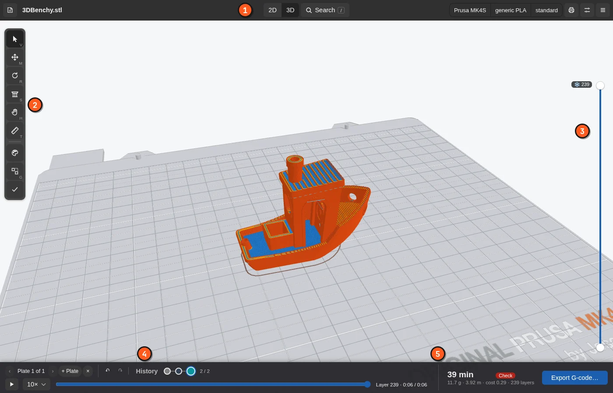
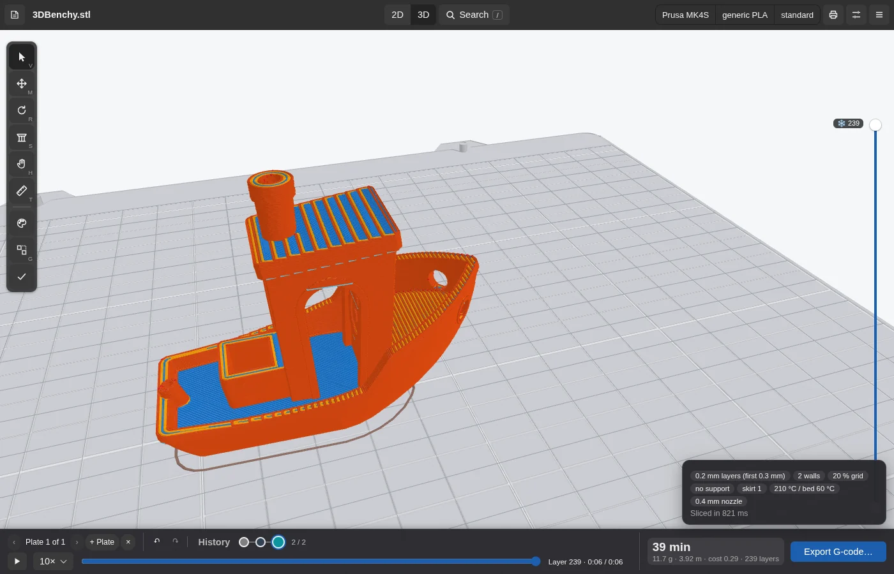

Start
1Your first print
Open a model, slice it, and print it. You need only this page.
The steps

- Open zslice. Go to zslice.beetlebug.org. The web app needs no install. For the Linux and the Mac app, see Web, Linux, and Mac.
- Pick your printer. The picker opens at the first start. Type a part of the name, for example "ender 3" or "mk4". Click the printer, then Next, then Add printer.
- Open a model. Drop an STL, 3MF, or OBJ file on the view, or click Open a model on the plate. zslice slices the model at once.
- Pick the filament and the quality. Use the two menus next to the printer in the header, for example "generic PLA" and "standard" (0.2 mm layers).
- Look at the print. Drag to turn the view. Turn the wheel to zoom. The print card at the bottom right gives the time and the plastic.
- Print. Click Export G-code… and copy the file to your printer. With a printer connection, the button is Print.
The window
The letters in the picture name the parts of the window.

| Part | What it does | |
|---|---|---|
| A | The header | Open, Search (/), the printer, the filament, the quality, Printers, the settings panel (N), and the main menu. |
| B | The tools | Select (V), Move (M), Turn (R), Support (S), Grab (H), Measure (T), then the colors, Gaps (G), and Check. |
| C | The layer slider | The top knob is the top layer that shows. The bottom knob cuts away the layers below it. |
| D | The dock | The plates, the history, and the replay of the print. |
| E | The print card | The time, the plastic, and the cost. Click the time for the details. Then Export G-code… or Print. |
Read the notes
The print card can show a note in a colored box. Read it before you print.
| The note says | Do this |
|---|---|
| The part hangs in the air with no support | Click Turn on support. |
| The part is very small: was the file in inches or in meters? | Click Inches (×25.4) or Meters (×1000). |
| A part is off the bed or on another part (red) | Move, turn, scale, or cut the part. |
